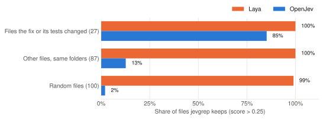
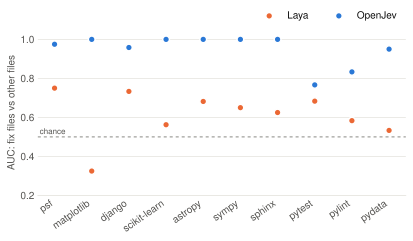
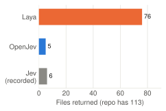
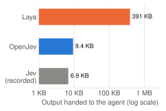
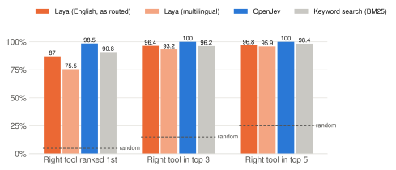

Can either open model do the decision work that jevgrep uses Jev for, on your own machine, for two jobs: finding the right code in a repository, and picking the right tools for an LLM?
Marks almost every file as relevant. jevgrep returned 76 of 113 files (391 KB) where Jev returned 6 files (6.9 KB).
Separates relevant from irrelevant files well (AUC {{oj_auc_sib}}). Returned 5 files (9.4 KB) containing the code the real fix changes. Needs a GPU server: 3 h 12 min for one search on a Mac.
{{laya_top1}}% right on the first pick, {{laya_top3}}% in the top 3, in 0.04 s. Plain keyword search scored {{bm25_top1}}% and {{bm25_top3}}%.
{{oj_top1}}% right on the first pick, {{oj_top3}}% in the top 3. About {{oj_secs}} s per request on a Mac; the model card reports about 80 ms per short decision on an H100.
No Jev API key was used. "Jev" figures come from a run recorded in the jevgrep repository. All tests ran on an Apple M3 Max (36 GB).
Jev, Laya and OpenJev are decision models: they do not write text. You give them a situation and a question, and they return a probability (yes/no) or a ranked choice. Both jobs below use that one skill.
The whole value is in step 1: a small packet saves the coding agent's tokens. A model that says "yes" to everything turns the packet into a dump of the repository.
| Test | Data | Question answered |
|---|---|---|
| a1 · File relevance | 10 real SWE-bench bugs; 27 files the fix or its tests changed, 187 other files | Does the model score the right files higher? |
| a2 · Full search | jevgrep end to end on the psf/requests bug (both models) and pytest (Laya) | What does the coding agent actually receive? |
| b · Tool choice | 200 requests from the Berkeley Function Calling Leaderboard, 20 tools each | Is the right tool first, or in the top 3 or 5? |
Each file was scored with jevgrep's own question: "does this file help investigate the requested behaviour?" jevgrep keeps a file when the score is above 0.25.

Laya kept 186 of the 187 unrelated files, so it filters nothing. OpenJev kept 85% of the files the fix or its tests changed and only 13% of files in the same folders and 2% of random files. The 4 fix files it missed were secondary ones: two Django database backends, a pytest test file and a pylint constants file.

AUC is the chance that a random fix file scores higher than a random other file. 0.5 is a coin flip. OpenJev scores 0.95 or higher on 8 of 10 projects and at least 0.77 on all of them. Laya ranges from 0.33 to 0.75, close to a coin flip (pooled against same-folder files: {{laya_auc_sib}} for Laya, {{oj_auc_sib}} for OpenJev).
jevgrep run end to end on the psf/requests bug "GET requests always send a Content-Length header",
with the query a coding agent really used. The Jev row is a run recorded in the jevgrep repository.


| Model | Files | Output | Contains the code the fix changes? | Time (Mac) |
|---|---|---|---|---|
| Laya | 76 of 113 | 391 KB | Yes, buried in two thirds of the repo | 12 min |
| OpenJev | 5 | 9.4 KB | Yes: prepare_content_length in models.py | 3 h 12 min |
| Jev (recorded) | 6 | 6.9 KB | Yes: models.py source blocks | – |
On the larger pytest repository, Laya returned 410 of 449 files (3.8 MB), including
116 release notes. OpenJev was not run there: on this Mac each large repository would take many hours.
200 requests from the Berkeley Function Calling Leaderboard. Each request came with 20 tools: its own 2 to 4 candidates (often near-misses from the same domain, such as two triangle calculators) plus distractors from other requests, in shuffled order. Each model ranked the 20 tools once.

| Laya | OpenJev | |
|---|---|---|
| Model size | 322M–421M parameters (3 checkpoints) | 27B parameters; tested as the 4-bit Apple build (14 GB) |
| Reads up to | 512–8,192 tokens, depending on checkpoint | 16,384 tokens |
| Speed on this Mac | 0.02–0.04 s per tool choice; about 2.5 s per jevgrep request | about 150 tokens/s: 4 s per tool choice, 25–40 s per file question |
| Speed on a GPU server | 33 ms per question (model card, T4 GPU) | 227 ms for a 1,100-token prompt (model card, one H100 with vLLM) |
| Licence | Apache 2.0 | CC BY-NC 4.0: non-commercial use only without permission |
| Works with jevgrep | Yes, via the patched laya provider | Yes, via the patched openjev provider |
Code, data and raw results: github.com/tabgab/jevgrep-laya, branch laya-provider, folder evals/laya.